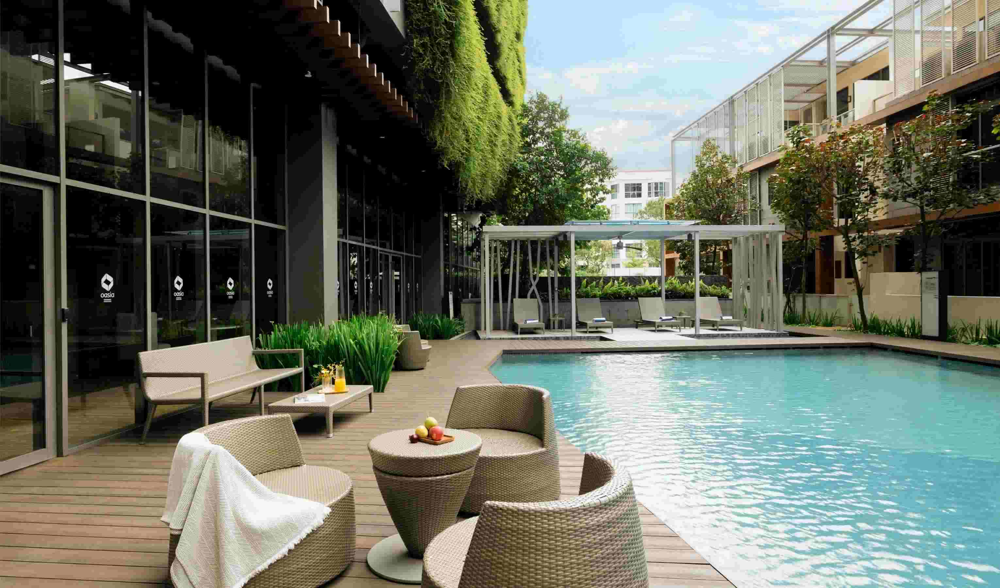
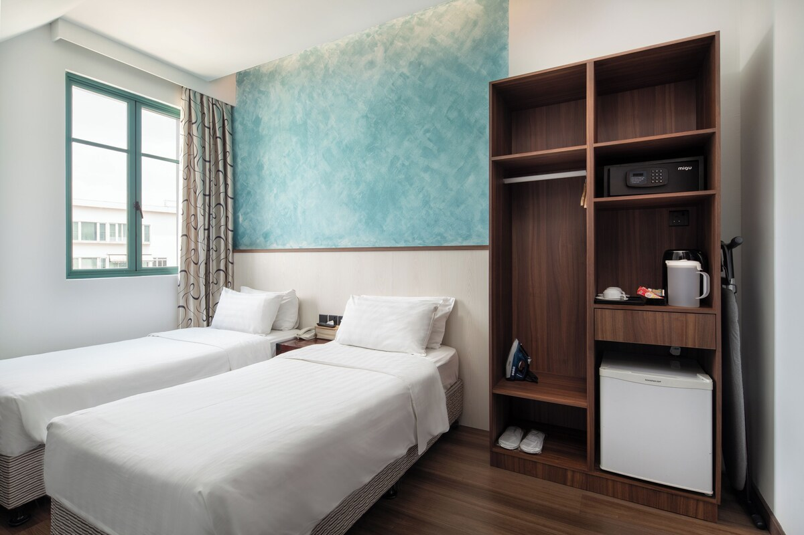

NUS University Town, Kent Ridge
Main venue: The Ngee Ann Kongsi Auditorium, Level 3, Education Resource Centre, NUS University Town.
Changi AirportTaxi or MRTKent Ridge / UTown
 Travel
Travel
Entry, transport, hotels, weather, and local recommendations for ISMPC2027 participants.
Main venue: The Ngee Ann Kongsi Auditorium, Level 3, Education Resource Centre, NUS University Town.

An optional evening cruise is a compact way to experience the Singapore River, Boat Quay, Clarke Quay, Marina Bay, and the skyline around Marina Bay Sands after the scientific sessions.


Use ICA's official list to confirm whether your passport requires a Singapore entry visa.
ICA visa requirementsMost travellers must submit SGAC within three days before arrival. ICA states SGAC is free and is not a visa.
Submit SGACSingapore's MRT, bus, taxi, and private-hire networks make NUS and the city centre easy to reach.
LTA public transportCheck official Singapore government sources before booking. Visa requirements depend on passport, nationality, travel document, and transit status.
Most non-Singapore passport holders need at least six months' passport validity. Keep proof of onward travel and sufficient funds available if requested.
If a visa is required, ICA directs visitors to apply online through a local contact or via authorised visa agents / Singapore Overseas Missions.
Submit within three days before arrival. The official SGAC service is free; avoid unofficial paid submission sites.
Simplest with luggage. Allow roughly 25-40 minutes from Changi Airport, depending on traffic.
Take the East-West Line from Changi Airport via Tanah Merah, transfer at Buona Vista to the Circle Line, then continue toward Kent Ridge or one-north.
Singapore has an integrated network of trains, buses, taxis, and private-hire cars. Rail services generally run from early morning to around midnight.
Suggested hotels and serviced residences near NUS, one-north, Kent Ridge, West Coast, and Alexandra.

7 Science Park Drive, Geneo. A practical serviced-residence option near Kent Ridge MRT and NUS.

80 Nepal Park. Good for participants who want MRT access and a lively one-north setting.

Near Rochester Mall and Buona Vista MRT, with convenient access to one-north and Science Park.

A quieter serviced-residence option near West Coast and Kent Ridge, useful for longer stays.

A compact West Coast option with short taxi or bus connections to NUS.

A full-service hotel near Alexandra Road, with straightforward taxi access to NUS and the city centre.
Merlion Park, Fullerton waterfront, Esplanade, Helix Bridge, Marina Bay Sands, and the Marina Bay promenade.
VisitSingapore Marina Bay
Flower Dome, Cloud Forest, Supertrees, OCBC Skyway, and the Garden Rhapsody light show.
Official Gardens Site
Chinatown, Kampong Gelam, Little India, and civic-district museums are compact half-day options.
Culture & Heritage
Singapore Botanic Gardens, Haw Par Villa, Holland Village, one-north, and West Coast Park are convenient add-ons.
Botanic GardensSingapore is tropical year-round. August is warm, humid, and rain showers can arrive quickly.